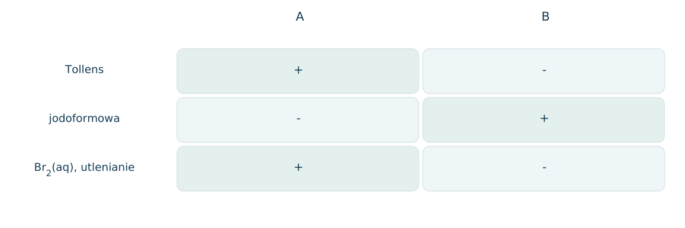
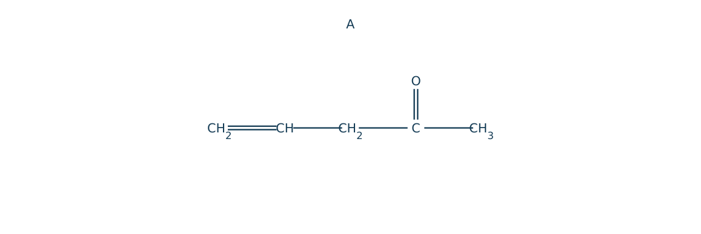
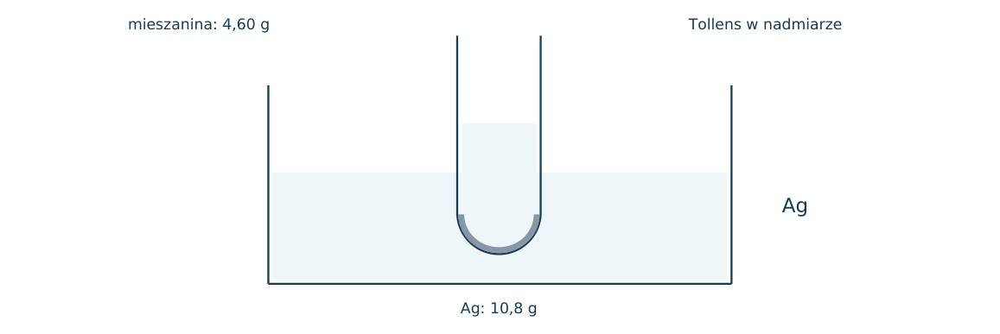
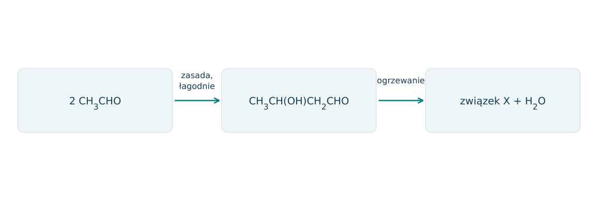
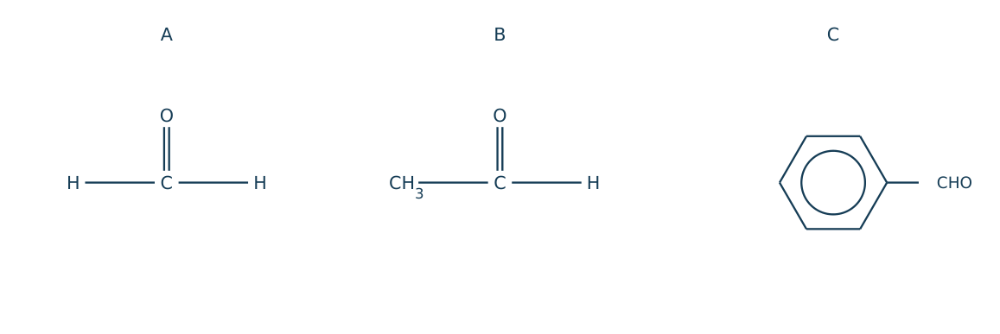
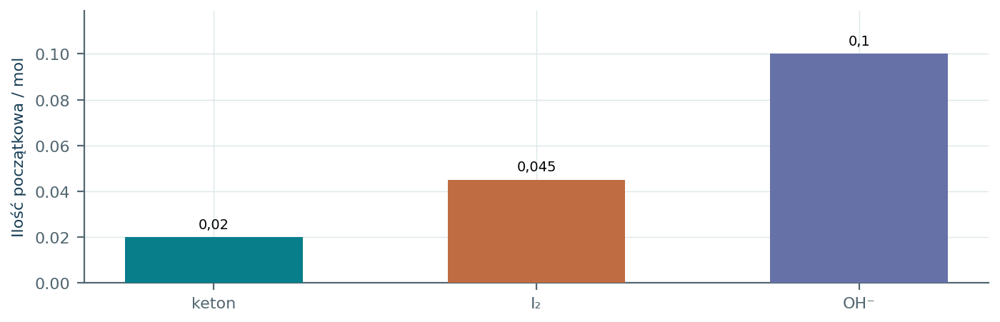
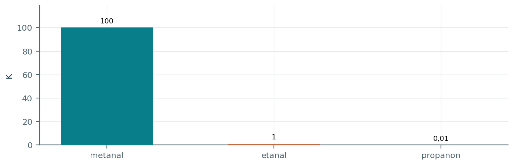
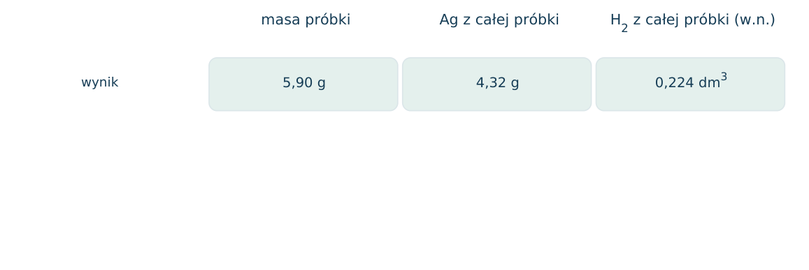
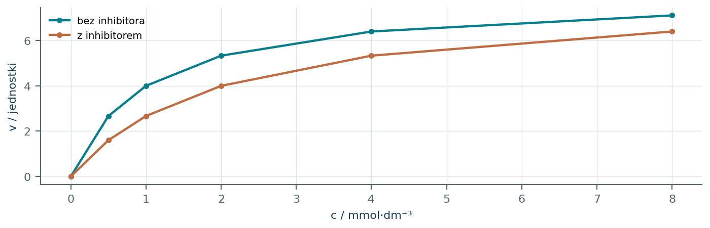
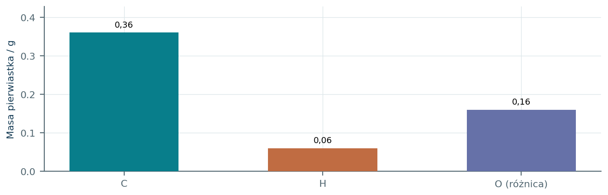

18.01 · 1 pkt
Podaj wzory półstrukturalne butanalu i butan-2-onu.
Rozwiązanie
- CH3CH2CH2CHO i CH3COCH2CH3.
50 zadań · 113 pkt · odpowiedzi rozwijane po samodzielnej próbie
← KatalogZadania PDFRozwiązania PDFDane do obliczeń: H 1; C 12; N 14; O 16; Na 23; Mg 24; Al 27; P 31; S 32; Cl 35,5; K 39; Ca 40; Cr 52; Mn 55; Fe 56; Cu 64; Zn 65; Ag 108; Br 80; I 127; Ba 137 (g/mol). NA = 6,02·1023 mol-1. Vm = 22,4 dm3/mol w warunkach normalnych (0°C, 1013 hPa). W 25°C Kw = 10-14. Dane podane w zadaniu mają pierwszeństwo.
Podaj wzory półstrukturalne butanalu i butan-2-onu.
Oceń zdania A i B, wpisując P albo F. Każde zdanie fałszywe popraw lub krótko uzasadnij. A: Propanal daje dodatnią próbę Tollensa. B: Każdy dodatni wynik Tollensa dowodzi obecności aldehydu w próbce.
Czym różni się położenie grupy karbonylowej w aldehydzie i ketonie?
Podaj hybrydyzację i geometrię otoczenia C karbonylowego w etanalu.
Zaznacz polaryzację C=O i wskaż atom podatny na atak nukleofila.
Dlaczego propanon dobrze rozpuszcza się w wodzie mimo braku grup OH?
Czy cząsteczki propanonu tworzą między sobą typowe wiązania wodorowe O-H...O? Uzasadnij.
Dlaczego aldehydy łatwiej utleniają się do kwasów niż ketony?
Napisz równanie utleniania propanalu za pomocą [O]. Nazwij organiczny produkt.
Napisz równanie redukcji etanalu wodorem. Nazwij organiczny produkt.
Napisz równanie redukcji propanonu wodorem. Nazwij organiczny produkt.
Napisz równanie otrzymania butanalu przez łagodne utlenianie butan-1-olu za pomocą CuO. Nazwij organiczny produkt.
Napisz równanie otrzymania butan-2-onu przez utlenianie butan-2-olu za pomocą CuO. Nazwij organiczny produkt.
Napisz równanie utlenienia benzaldehydu za pomocą [O]. Nazwij organiczny produkt.
Napisz równanie jonowe próby Tollensa etanalu z [Ag(NH3)2]+ w zasadowym środowisku.
Napisz równanie próby Trommera etanalu w nadmiarze zasady, z użyciem Cu(OH)2.
Zaprojektuj rozróżnienie propanalu i propanonu próbą Tollensa. Podaj wyniki.
Czy dodatnia próba Tollensa dowodzi, że badana substancja jest aldehydem?
Czym różni się wynik ogrzania Cu(OH)2 bez reduktora od dodatniej próby Trommera?
Dlaczego nie należy nazywać osadu Cu2O „miedzią” w opisie próby Trommera?
Ile gramów Ag może wydzielić 0,10 mola etanalu w próbie Tollensa? M(Ag)=108 g/mol.
Z próbki etanalu wydzielono 2,16 g Ag. Oblicz masę etanalu, zakładając reakcję ilościową.
Ile dm3 H2 w warunkach normalnych potrzeba do redukcji 5,8 g propanonu?
Z 0,20 mola propan-1-olu otrzymano 8,70 g propanalu. Oblicz wydajność, M aldehydu=58 g/mol.
Aldehyd nasycony, acykliczny i monofunkcyjny ma M=72 g/mol. Ustal wzór sumaryczny.
Narysuj wszystkie aldehydy i ketony nasycone, acykliczne o wzorze C4H8O i nazwij je.
Związek C3H6O daje próbę Tollensa i po redukcji alkohol I-rzędowy. Ustal oba wzory.
Związek C4H8O nie daje próby Tollensa, ale redukuje się do alkoholu. Podaj wzór ketonu i alkoholu.
Dlaczego redukcja butan-2-onu może dać mieszaninę enancjomerów, a redukcja propanonu nie?
Źródło: aldehyd bez H przy sąsiednim atomie C może dysproporcjonować: 2RCHO+OH-→RCOO-+RCH2OH. Zastosuj zapis do C6H5CHO.
Według reguły z poprzedniego opisu, które aldehydy mogą dysproporcjonować: CH3CHO, (CH3)3CCHO, C6H5CHO? Informacja: liczy się brak H przy C sąsiadującym z CHO.
Źródło: ketony CH3COR dają żółty CHI3 w próbie jodoformowej. Wybierz z butan-2-onu i pentan-3-onu związek reagujący i wskaż fragment decydujący.
Czy utlenienie aldehydu do kwasu jest reakcją addycji wodoru?
Jak odróżnić etanol, etanal i propanon, wykorzystując CuO z ogrzewaniem oraz próbę Tollensa? Rozważ oddzielne porcje.
W próbie Tollensa otrzymano 4,32 g Ag z 10,0 g roztworu etanalu. Oblicz procent masowy etanalu.
W reakcji utlenienia 0,050 mola propanalu otrzymano kwas propanowy. Oblicz maksymalną masę kwasu M=74 g/mol i zmianę stopnia utlenienia C grupy funkcyjnej.
Napisz ciąg z wzorami produktów: CH3CH2OH → A → B. A daje Tollensa, a B reaguje z NaHCO3. Podaj odczynniki obu przemian.
Wodę bromową odbarwia etanal i eten. Czy sam zanik barwy odróżni te próbki? Podaj inną próbę z różnym wynikiem.
Dlaczego przy zapisie produktu próby Tollensa w zasadowym środowisku właściwszy jest CH3COO- niż CH3COOH? Uzasadnij.
10,0 g mieszaniny propanalu i propanonu dało 21,6 g Ag w ilościowej próbie Tollensa. M obu związków=58 g/mol. a) Wskaż reagujący składnik. b) Ustal n aldehydu z bilansu Ag. c) Oblicz udziały masowe. d) Podaj produkt redukcji każdego składnika i określ rzędowość alkoholi.
Każdy numer 41-50 oznacza jedno zadanie główne; podpunkty są oceniane osobno.
A i B mają wzór C4H8O. Oba wykazują pasmo C=O. Próby pokazano w tabeli. Podano, że dodatnia próba jodoformowa aldehydu dotyczy etanalu, a ketonu wymaga fragmentu CH3CO-. A ma prosty nierozgałęziony łańcuch.

18.41.1 (2 pkt) Ustal nazwy i wzory A oraz B, łącząc wyniki co najmniej dwóch prób.
18.41.2 (1 pkt) Zapisz utlenianie A wodą bromową.
18.41.3 (1 pkt) Czy sama próba Tollensa wykluczyłaby 2-metylopropanal jako A?
A butanal CH3CH2CH2CHO; B butan-2-on CH3COCH2CH3. A aldehyd, B metyloketon.
CH3CH2CH2CHO+Br2+H2O→CH3CH2CH2COOH+2HBr.
Nie; to również aldehyd. Rozstrzyga dodatkowa informacja o nierozgałęzionym łańcuchu.
W warunkach zadania NaBH4 redukuje C=O aldehydów i ketonów do alkoholi, nie redukuje C=C ani grup COOH. W cząsteczce z rysunku nie zachodzą inne przemiany. Wiązania przedstawiono jawnie.

18.42.1 (2 pkt) Zapisz półstrukturalny wzór produktu i nazwij zachowaną grupę wielokrotną.
18.42.2 (1 pkt) Ile stereoizomerów produktu może powstać w achiralnym środowisku i dlaczego?
18.42.3 (1 pkt) Oblicz masę produktu z 0,100 mola A przy wydajności 85,0%. M produktu=86.
CH2=CHCH2CH(OH)CH3; pozostaje wiązanie alkenowe C=C.
Dwa enancjomery: C z OH ma H, OH, CH3, CH2CH=CH2; przy braku selektywności powstaje racemat.
n=0,0850 mol; m=7,31 g.
4,60 g mieszaniny etanalu i etanolu poddano próbie Tollensa z nadmiarem odczynnika. Otrzymano 10,8 g Ag. Przyjmij: 1 mol aldehydu wydziela 2 mole Ag, etanol nie reaguje, a M(Ag)=108 g/mol.

18.43.1 (2 pkt) Oblicz masowy udział etanalu.
18.43.2 (2 pkt) Zapisz jonowe równanie próby: aldehyd utlenia się do anionu, [Ag(NH3)2]+ redukuje do Ag w zasadowym środowisku.
18.43.3 (1 pkt) W jakim kierunku zmieniłby się wynik, gdyby część srebra nie została zebrana?
nAg=0,100 mol; naldehydu=0,0500 mol; m=2,20 g; udział=47,8%.
CH3CHO+2[Ag(NH3)2]++3OH-→CH3COO-+2Ag+4NH3+2H2O.
Zaniżono by masę i udział etanalu.
W pierwszym etapie dwa etanale tworzą CH3CH(OH)CH2CHO bez wydzielenia małej cząsteczki. Ogrzewanie produktu prowadzi do utraty H2O i powstania sprzężonego C=C-C=O. Wykorzystaj schemat, nie zakładając znajomości nazwy reakcji.

18.44.1 (2 pkt) Zapisz wzór X i nazwij grupy funkcyjne w produkcie pośrednim.
18.44.2 (1 pkt) Oblicz największą masę X z 8,80 g etanalu, M(X)=70.
18.44.3 (1 pkt) Wyjaśnij, dlaczego pierwszy etap spełnia bilans atomów bez H2O, a drugi nie.
X=CH3CH=CHCHO; pośredni ma grupę aldehydową i hydroksylową.
nEtanalu=0,200 mol; nX=0,100 mol; m=7,00 g.
Pierwszy łączy dwie cząsteczki C2H4O w C4H8O2; drugi zmniejsza H o 2 i O o 1, wydzielając H2O.
Podano: aldehydy bez atomu H przy C sąsiadującym z CHO mogą w silnej zasadzie reagować 2RCHO+OH-→RCOO-+RCH2OH. Na rysunku pokazano metanal, etanal i benzaldehyd. Rozważ zastosowanie wyłącznie tej reguły.

18.45.1 (2 pkt) Wskaż pasujące substraty i zapisz równanie dla C.
18.45.2 (1 pkt) Ile moli alkoholu powstanie z 0,120 mola C przy całkowitym przebiegu tej przemiany?
18.45.3 (1 pkt) Wyjaśnij rolę obu cząsteczek aldehydu w redoksie, analizując C grupy CHO.
A i C; 2C6H5CHO+OH-→C6H5COO-+C6H5CH2OH.
0,0600 mola.
Jedna utlenia się: C+I→+III; druga redukuje: C+I→-I. Jest to dysproporcjonowanie.
Podano równanie: RCOCH3+3I2+4OH-→RCOO-+CHI3+3I-+3H2O. Do 0,0200 mola butan-2-onu dodano 0,0450 mola I 2 i 0,100 mola OH-. Jodoform CHI3 jest żółtym osadem; M(CHI3)=394 g/mol.

18.46.1 (2 pkt) Wskaż reagent ograniczający i oblicz teoretyczną masę osadu.
18.46.2 (1 pkt) Zapisz wzór anionu RCOO- powstającego z podanego ketonu.
18.46.3 (1 pkt) Ile ketonu pozostanie, jeżeli cała przemiana zachodzi tylko według podanego równania?
Porównać n/ν: 0,0200;0,0150;0,0250. Ogranicza I 2; mCHI3=0,0150·394=5,91 g.
CH3CH2COO-, propanian.
0,0200-0,0150=0,00500 mola.
Dla RCHO+H2O⇌RCH(OH)2 podano K=[hydratu]/[aldehydu], bo wodę włączono do stałej. Na wykresie pokazano K dla trzech związków. Łączne analityczne stężenie metanalu i jego hydratu wynosi 0,100 mol/dm3.

18.47.1 (2 pkt) Oblicz stężenia obu form w modelowym roztworze metanalu.
18.47.2 (1 pkt) Porównaj procentowe udziały hydratu dla etanalu i propanonu.
18.47.3 (1 pkt) Czy katalizator kwasowy musi zmienić te udziały w ustalonej T?
[hydratu]=100[HCHO]; 101[HCHO]=0,100; [HCHO]=0,000990, [hydratu]=0,0990 mol/dm3.
Etanal 50%; propanon 0,01/1,01≈0,990%.
Nie; może przyspieszyć osiąganie równowagi, ale nie zmienia jej stałej w tej temperaturze.
Próbka zawiera tylko propan-1-ol, propanal i propanon. W niezależnych pomiarach: 1 mol propanalu daje 2 mole Ag; 1 mol propan-1-olu daje 0,5 mola H2 z Na; propanon nie daje tych efektów. Przyjmij, że aldehyd i keton nie reagują z Na w przyjętej procedurze oznaczania.

18.48.1 (2 pkt) Oblicz ilości propanalu i propan-1-olu.
18.48.2 (1 pkt) Wyznacz masę propanonu; M alkoholu=60, aldehydu i ketonu=58.
18.48.3 (1 pkt) Dlaczego analizy trzeba wykonać na niezależnych porcjach lub odtworzyć próbkę?
nAg=0,0400; naldehydu=0,0200 mol. nH2=0,0100; nalkoholu=0,0200 mol.
malkoholu=1,20 g; maldehydu=1,16 g; mketonu=5,90-2,36=3,54 g.
Pierwsza próba chemicznie zużywa lub zmienia składniki; druga nie mierzyłaby już składu wyjściowego.
Modelowy enzym utlenia aldehyd do kwasu. Początkowe szybkości zależą od stężenia substratu zgodnie z v=vmax·c/(Km+c). Z wykresu odczytaj vmax=8,00 jednostek i Km jako c przy v=vmax/2. Jednostki są umowne i jednakowe dla obu serii.

18.49.1 (2 pkt) Odczytaj Km dla obu serii i oblicz v dla c=3 bez inhibitora.
18.49.2 (1 pkt) Czy zgodnie z modelem inhibitor zmienia podane vmax, czy stężenie potrzebne do połowy vmax?
18.49.3 (1 pkt) Napisz równanie sumaryczne utleniania propanalu przez [O], bez opisywania mechanizmu enzymu.
Km=1 i 2 mmol/dm3; v=8·3/(1+3)=6,00.
Zwiększa Km, nie zmienia vmax.
CH3CH2CHO+[O]→CH3CH2COOH.
Spalenie 0,580 g X dało 1,32 g CO2 i 0,540 g H2O. M(X)=58,0 g/mol. W próbie Tollensa X nie wydziela Ag, lecz daje dodatnią próbę jodoformową. Wykres przedstawia bilans pierwiastków odtworzony z produktów spalania.

18.50.1 (2 pkt) Wyznacz wzór sumaryczny z rachunku molowego.
18.50.2 (1 pkt) Ustal X i wskaż fragment odpowiadający próbie jodoformowej.
18.50.3 (1 pkt) Czy ujemny Tollens samodzielnie dowodzi obecności ketonu w dowolnej nieznanej próbce?
nC=0,0300, nH=0,0600, nO=0,0100; C3H6O, zgodny z M=58.
Propanon CH3COCH3; fragment CH3CO-.
Nie; wiele związków nie daje tej próby. Wniosek wynika tu łącznie ze składu, M i próby jodoformowej.